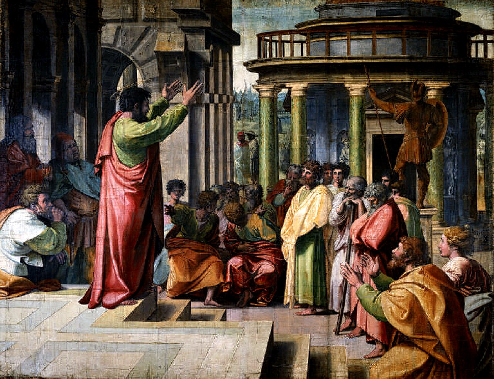
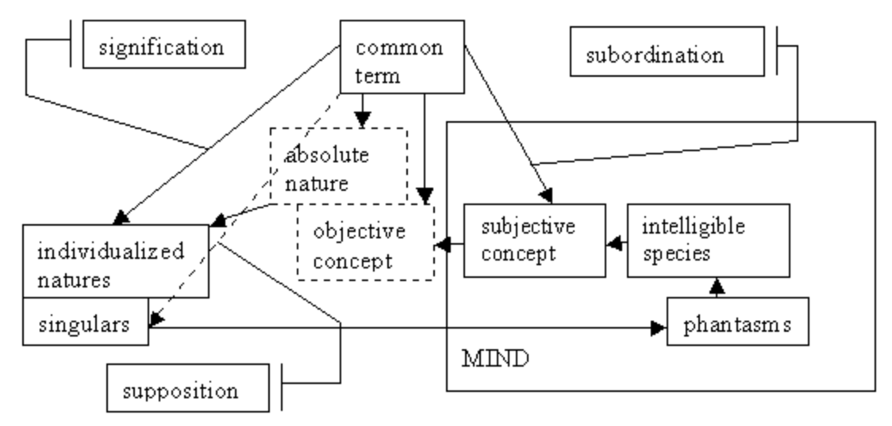
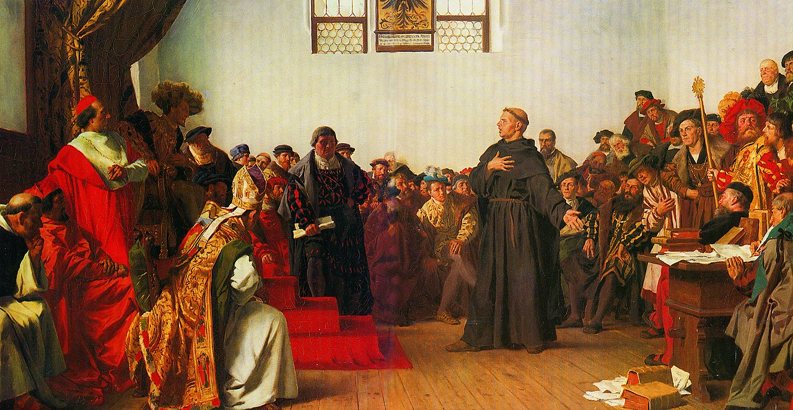
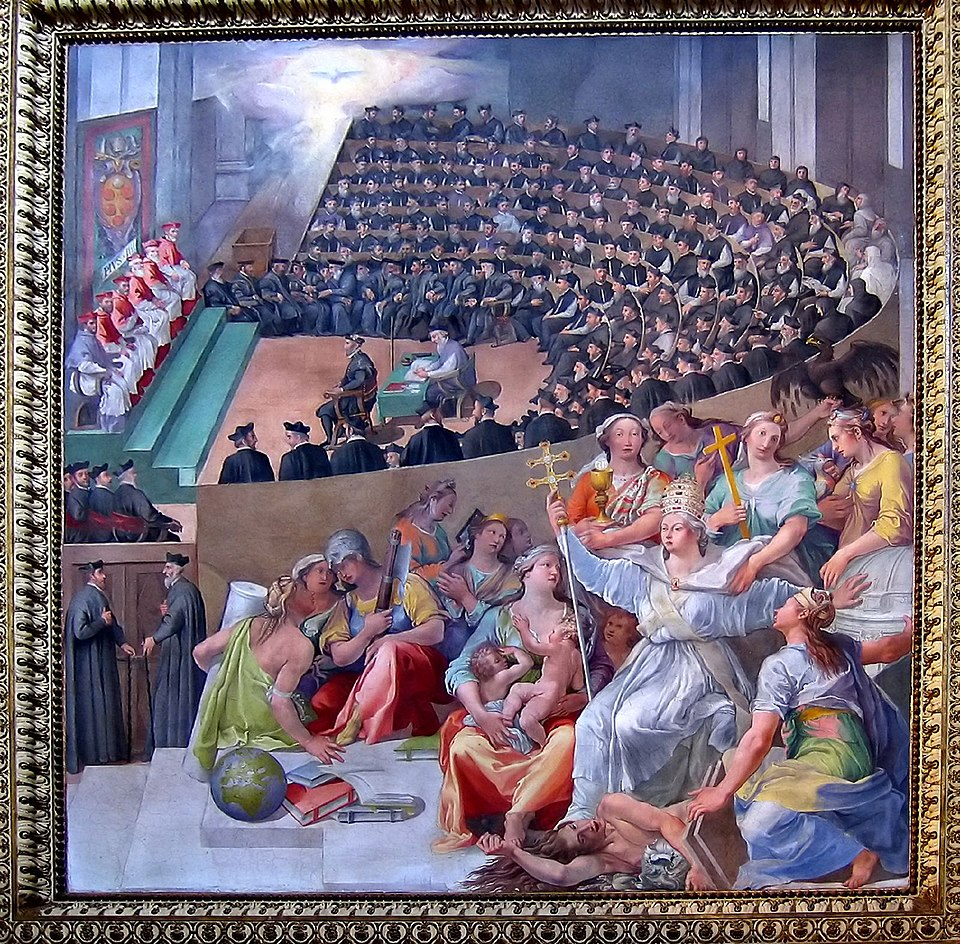
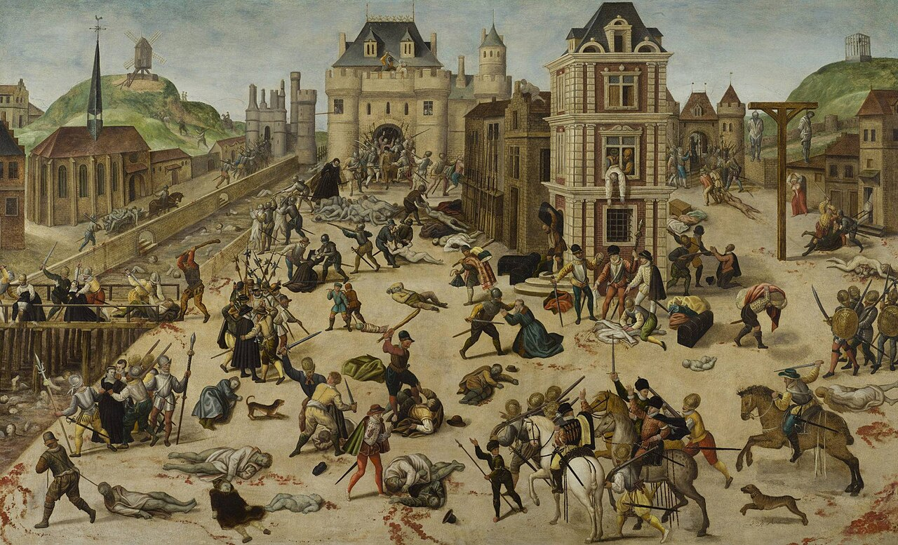

TW: profanity, sarcasm, misuse of theological concepts.
Hosea and Gomer, from the Bible Historiale (1372)
There’s something special about “Venice Bitch,” the nine-minute-long song from Lana Del Rey’s 2019 album Norman Fucking Rockwell. Wikipedia writes that the song earned “unanimous praise from music critics” and “was ranked by numerous publications amongst the best songs of the year and decade,” while Tyler Cowen recently spoke about his affection for this song in a 2023 podcast with Rick Rubin, calling it his favorite song of recent years:
[“Venice Bitch”] just leaves me on the floor… It's one of those songs like “Strawberry Fields Forever” that it's even difficult to talk about, but it's a kind of dream pop, and it's creating a dream. It keeps on shifting like a dream. There's this extreme willingness to admit her passion for her lover's kiss, creating or harkening back to this world of an earlier America where things seemed much simpler, but the music is complex and it all comes together. And then there are seven more minutes of it where it becomes weirder. And you're always longing for the earlier, more melodic part to come back, and it never does, and it just makes you want to have to listen to it again.
The themes of “Venice Bitch” are, on the surface, obvious—nostalgia, lost love, memories of an idyllic time. But these ideas come from scattered images and, as Cowen notes, it’s hard to actually make sense of the song’s fragmented and metaphorical lyrics. Who is the lover? What happened to their relationship, why were they back together and then apart again, and what does the song’s fragmented and poetic ending mean? And, if nobody understands this song, why does it have such a peculiar hold over so many listeners?
Lana is no stranger to cryptic lyrics. In 2024, she told an interviewer that “I’ve put parts of my story into songs in ways that only I understand” and, when asked about her album’s story, replied “You have to figure it out.” While many writers have argued about the meaning of “Venice Bitch,” I think nobody’s yet unveiled the full esoteric meaning of this song. I will attempt to do so in this post.
More specifically, I’ll argue that behind the literal meaning of “Venice Bitch,” which refers to places and events in southern California, there’s a deeper allegorical/anagogical meaning to the song. Early church fathers, medieval authors, and Jewish mysticism all agree that there are multiple layers of meaning to any text, including not only the literal narrative but also moral and allegorical meanings designed to be understood upon deeper analysis and contemplation. As I’ll argue below, I think Lana Del Rey is part of this tradition and “Venice Bitch” cannot be fully understood solely through the surface-level narrative; instead, “Venice Bitch” is intended to poetically portray the futility of Temple-mediated propitiatory reconciliation in a fallen world.
(If you haven’t done so, it’s worth listening to the song before reading further.)
Expulsion from Eden
There’s little that’s concrete to start with in a song as meandering and poetic as “Venice Bitch.” One of the song’s only unambiguous references is the line “nothing gold can stay,” which comes from a 1923 Robert Frost poem. I’ll reproduce the poem here in its entirety, with emphases added:
Nature's first green is gold,
Her hardest hue to hold.
Her early leaf's a flower;
But only so an hour.
Then leaf subsides to leaf.
So Eden sank to grief,
So dawn goes down to day.
Nothing gold can stay.
Here, Frost uses the line “nothing gold can stay” to describe how the inherent beauty of creation always succumbs to decay in a post-Edenic world. The connection to Eden is particularly interesting for our purposes because in “Venice Bitch” the narrator writes about being “back in the garden” with her lover:
Back in the garden
We're getting high now because we're older
Me myself, I like diamonds
My baby, crimson and clover
If we entertain the idea that the “garden” might be Eden, what does it mean to be “back in the garden,” and how does this relate to “getting high now because we’re older”? Here we need to pull in another book from the Cowen Extended Universe, L. Michael Morales’s Who Shall Ascend the Mountain of the Lord? In this book, Morales argues that Eden is the original “holy mountain” of God, a lush garden-summit from which rivers flow to water the whole earth (pp. 51–52). In the “cultic cosmology” of the Pentateuch, ascent corresponds to movement towards God’s holy mountain while descent corresponds to movement away from God: hence why Abraham ascends Mount Moriah and Moses ascends Mount Sinai.
(It’s worth noting that the very first lines of “Venice Bitch” deliberately place us in a post-Edenic world: the narrator describes herself as dressing “in jeans and leather” in the first verse, echoing the “clothes of skins” from Genesis 3:21.)
Adam’s sin causes humanity to leave Eden and fall out of relationship with God, and even someone as righteous as Moses is unable to enter God’s presence by the end of Exodus. Within the narrative of the Pentateuch, only the Levitical temple cultus allows humans to once again reside in the presence of God and metaphorically “ascend the mountain of the Lord.” The tabernacle and later the temple thus serve as the new Eden, where God and man can dwell together—hence why the columns of the temple are carved to look like trees and hung with fruits. (G. K. Beale writes that “Israel’s earthly tabernacle and temple” were “reflections and recapitulations of the first temple in the Garden of Eden”; see The Temple and the Church’s Mission p. 66.)
So, through the mediation of the temple, we are allegorically “back in the garden” and “getting high” as we ascend to God's presence. This fits with the rest of the verse—”diamonds” reflects the high priestly breastplate covered in precious gems (which itself represents the entire cosmos, see Beale pp. 39–45), while “crimson and clover” refers to the blood-soaked hyssop used to paint the doorposts for Passover (Exodus 12:22) and, by extension, the idea that propitiatory sacrifice can appease God’s wrath.
(Why clover and not hyssop? Lana’s also alluding to the 1968 song “Crimson and Clover,” allowing the same line to serve two purposes.)
Exilic Longing
There’s more to “Venice Bitch” than a straightforward story of temple-mediated reconciliation, though. Let’s take one of the lines we discussed previously and zoom out to see the whole verse:
You're in the yard, I light the fire
And as the summer fades away
Nothing gold can stay
You write, I tour, we make it work
You're beautiful and I'm insane
The first line is simple enough: a reference to burnt offerings (“I light the fire”) conducted in the outer court of the temple (the “yard”). But here, the temple imagery is followed by the line that “nothing gold can stay,” suggesting that the imitation Eden of the temple is doomed just like the first Eden was and casting doubt on the whole temple enterprise.
What about summer fading away? In Song of Solomon, summer is associated with the presence of “the beloved” (Song. 2:8–13), which can be read literally as one’s lover but is also typically associated with God (what Kevin VanHoozer calls “an unbroken consensus for nearly nineteen centuries,” Mere Christian Hermeneutics p. 364). God is also represented by the sun in many other sections of the Bible (e.g. Malachi 4:2, Psalm 84:11). So the line “as the summer fades away” means that the presence of God is leaving the temple, recapitulating again the separation between God and man first experienced at Eden. God’s not leaving for good, but He’s growing more distant.
Since the remaining two lines of the verse occur after the decline of the temple cultus, it’s logical to associate them with the exilic and post-exilic prophets. The lyrics state that the narrator is touring—going around from place to place—while her lover is writing. This matches with imagery from Ezekiel, Hosea, and others which describe Israel as a faithless bride. While God writes through the prophets urging Israel to come back, Israel has abandoned their covenant and is wandering (“touring”) among the nations. Thus “you’re beautiful and I’m insane”; God’s love remains beautiful, but the narrator is not of sound mind and cannot accept this love (see also the opening refrain of “fear fun, fear love”).
The subsequent lines continue this theme:
Give me Hallmark
One dream, one life, one lover
Paint me happy in blue
What prevents this marriage from happening? Let’s jump right to the chorus:
Oh God, miss you on my lips
It's me your little Venice bitch
On the stoop with the neighborhood kids
Callin' out, bang bang, kiss kiss
Here, the narrator literally addresses God, saying she misses him “on my lips” (continuing the Biblical idea of the romantic love between God and his people, or possibly a Eucharistic reference). Unfortunately, she’s not with him—she’s “on the stoop with the neighborhood kids.” Morales writes that the Tower of Babel, most likely a ziggurat or ancient step pyramid, was an attempt to reconstruct the mountain of God from the city of man (pp. 61–62). By so doing, the nations attempted to take divine power into their own hands, recapitulating the sin of Eden and triggering divine retribution.
In these lyrics, the narrator is sitting on the steps with the neighborhood kids, making her a participant in the sin of Babel alongside the nearby nations. As she sits, she is making advances to passers-by. She’s not being faithful to her lover; instead, she’s been corrupted by the other nations and is flirting with idolatry. It’s with these same emotions that the hymnist Robert Robinson writes “Prone to wander, Lord, I feel it” and asks God to “bind my wandering heart to thee.”
Why is she a “Venice bitch”? The story of Hosea is pertinent here. In Hosea, God tells the prophet Hosea to marry a prostitute (Gomer) and make her his wife. Gomer is not faithful to Hosea and eventually leaves, and in chapter 3 Hosea has to go back and pay money to redeem her, either out of debt or slavery (the text isn’t quite clear). This story explains the narrator’s self-identification as a “Venice bitch”: put crudely, calling herself a “bitch” represents her unfaithfulness, while the inclusion of Venice makes it clear that she’s enslaved as well (before the Instagrammable bridges, Venice was principally known as a slave-trading empire).
The earlier mention of summer fading away can also be read as a reference to Israel’s faithlessness. Ezekiel 8 mentions the pagan practice of “weeping for Tammuz,” where worshippers would spend the hot summer months ritually mourning Tammuz, the sun- and spring-related deity who according to myth died and was reborn each year. According to Ezekiel, this ritual was sometimes performed in the temple itself (“in the yard”), demonstrating the depth of Israel’s wickedness and idolatry.
Captive to the Law of Sin
The images of unfaithfulness connect to the narrator’s early self-description as an “ice queen” who’s “trying to be stronger for you.” Her frozen heart echoes the prophetic image of “hearts of stone” (Ezekiel 36:26) which are unable to return God’s love properly; her futile attempts to be stronger echo Paul’s writing in Romans 7:
For I have the desire to do what is right, but not the ability to carry it out…. For I delight in the law of God, in my inner being, but I see in my members another law waging war against the law of my mind and making me captive to the law of sin that dwells in my members. Wretched man that I am! Who will deliver me from this body of death?
As Paul describes, the narrator is trapped in a cycle of sin and failure, her frozen and stony heart unable to respond as she ought to God’s love. While in her inner being she wishes for “one love,” her fallen nature makes this impossible, leading to a cycle of continued spiritual unfaithfulness and distance from the divine.
We can connect these ideas to a line from the song’s first verse: “live stream, I'm sweet for you.” Following the original streams of water coming out of Eden to water the earth, the idea of a “living stream” is a common Biblical image for God’s nourishment: Psalm 1 describes the man who follows God’s law as “planted by streams of water,” while Jesus offers the “living water” of the Spirit in John’s gospel (John 4:13–14, 7:37–39) and the Edenic temple-city at the end of Revelation contains “the river of the water of life, bright as crystal, flowing from the throne of God and of the Lamb” (Revelation 22:1). Much like the woman in John 4, the narrator identifies as “sweet for” (i.e. desiring) the “live stream” of the addressee, symbolizing her desire to return the presence of God—but, of her own power, she cannot obtain this living water.
Lana, Hermeneut?
At this point, we’ve been in the weeds long enough that the skeptical reader might wonder: would Lana Del Rey really write such a detailed and theological subtext to her song? I of course can’t answer this conclusively—as noted above, Lana writes complex and secretive lyrics with little explanations, making it difficult to know what she would or wouldn’t say.
Still, her Christian credentials are pretty strong:
Lana was raised Christian and has previously challenged Christian influencers that “I know the Bible verse for verse better than you do.” In a 2013 Nylon interview, she says that “I loved the mysticism, the idea of something bigger, the idea of a divine plan” (quoted in Relevant).
A 2023 Rolling Stone interview describes Lana’s experience of prayer: “you can pray and pray and pray to feel unburdened, and then sometimes, for no reason, on a Tuesday afternoon, everything lifts (quoted in Relevant).
She also featured pastor Judah Smith on her 2023 album Did You Know That There's a Tunnel Under Ocean Blvd. (Smith would go on to officiate her wedding in 2024.)
Deus Ex Machina
Let’s conclude by looking at the song’s ending. As Tyler notes, the song gradually shifts from a melodic opening to an increasingly atonal and experimental section in which the narrator repeats the lines “crimson and clover, honey” and “over and over, honey.” As mentioned above, “crimson and clover” reflects the propitiation of temple sacrifice. “Honey” represents the promise of God’s presence, a land “flowing with milk and honey” (Exodus 3:8, see also Judges 14:8–9 and 1 Samuel 14:24–30) while “over and over” shows us that the cycle of sin continues unabated, with no hope for improvement in the relationship between God and man. Even after the return from exile (“my baby’s back in town now”), the narrator pleads for the lover to return (“you should come, come over”) to no avail.
It’s against this chaotic backdrop that Lana suddenly sings the song’s final lyric, repeated five times:
If you weren't mine, I'd be jealous of your love
If you weren't mine, I'd be jealous of your love
If you weren't mine, I'd be jealous of your love
If you weren't mine, I'd be jealous of your love
If you weren't mine, I'd be jealous of your love
What does this abrupt and confusing ending mean? In Biblical language, jealousy is associated almost exclusively with God. God is a jealous God who wants his people’s love above all else (Exodus 20:5, 34:14; Deuteronomy 4:24, 5:9, 6:15). Here, it seems that the narrator has shifted and God himself has broken into the lyrics of the song. This literary device might seem unusual to modern audiences but it’s pretty common in the psalms: see, for instance, Psalm 12, Psalm 91, and Psalm 50.
God is responding to the endless cycle of “crimson and clover”–based attempts at reconciliation and asserting that He remains jealous for his people’s love. Just like in the prophets, God is promising to break the cycle of sin and create a new world in which His people can leave Him no more (cf. Jeremiah 31:34), achieving the promised mystical marriage between God and man: “one dream, one life, one lover” (cf. Revelation 21:2).
The song fades out here, leaving us uncertain how this can be accomplished. We can, of course, answer this question by referring to salvation history, the Gospels, or the New Testament. But we don’t even need to look that far to resolve this mystery. ”Venice Bitch” is a song by Lana Del Rey, which translated means “wool of the king.” What sort of king has wool? Only a king who is a lamb; namely, the Lamb Who Was Slain, who now sits enthroned in heaven (Revelation 5:6) and will one day bring justice and reconciliation to the world.
Something I’ve been thinking about recently is the information content of different biomolecules. While small molecules, peptides, antibodies, and oligonucleotides can all be valuable therapeutic assets in various contexts, they’re strikingly different to synthesize, develop, and simulate. There are well-known reasons for many of these differences—oligonucleotide synthesis can be highly automated, xenobiotic small-molecule metabolism proceeds through totally different pathways than peptide metabolism, and so on—but at a high level I think many of these differences can be seen as downstream of the observation that small molecules have much higher information entropy per atom.
Information entropy, also known as Shannon entropy (after Claude Shannon), quantifies the amount of “surprise” associated with each new piece of data. A sequence like “AAAAAAAAAAAAACAAAAA” has low entropy, since almost every letter is A—seeing another A gives us little new information, and so we can guess with pretty good odds that the next letter will be “A.” In contrast, a sequence like “ACTAGGACATAAGACAGGCT” has high entropy, since it seems that any position has four different possibilities. Since there are many possible sequences like this (just over a trillion for this length), each new letter conveys a lot of information about which particular sequence this is.
(This is a very brief introduction to Shannon entropy, and may be insufficient for those new to the topic—you can find plenty of better ones on Google.)
For molecules, we can approximate the information content per atom as the base-2 logarithm of the number of possible molecules divided by the number of possible atoms. This definition lets us make some quick estimates for the per-atom entropy of different modalities:
There are 4 valid nucleotides, or two bits of entropy per nucleotide. If we approximate a nucleotide as having 20 heavy atoms, we find that an oligonucleotide contains 0.1 bits of entropy per heavy atom.
For proteins and other peptides, there are 20 valid amino acids, or 4.32 bits of entropy per residue. Assuming 8.3 heavy atoms per residue, this gives us a value of 0.52 bits of entropy per heavy atom.
Small molecules are a different story. The GDB-17 paper estimates that there are 166 billion druglike molecules with 17 or fewer heavy atoms, with the vast majority of these having 15–17 heavy atoms. This corresponds to 2.2 bits of entropy per heavy atom.
The small-molecule value quoted above may even be conservative: GDB-17 applies fairly conservative filters and doesn’t include elements like S, P, B, and so on. If you take the oft-cited figure of 1060 possible drug-like molecules below 500 Da and approximate that as 35 heavy atoms, you arrive at a significantly larger value of 5.7 bits of entropy per heavy atom.
The markedly higher entropy of small molecules helps explain why small molecules are so tricky to synthesize. Fundamentally, any synthetic route must be specific and selective enough to disambiguate between virtually infinite numbers of potential products, which drives chemists to use complex and obscure reactions to achieve selectivity. Most approaches to simplifying small-molecule synthesis do so by vastly reducing the addressable space, enabling simple “Lego brick”–style routes to be employed. While there are sure to be improvements in synthetic technology over the decades to come, I think that making arbitrary small molecules will continue to be a difficult and complex task for fundamental and unescapable reasons.
The high information content of small molecules also explains why they can be such effective drugs. The ability to pack so much information into a small number of atoms makes it possible to achieve impressive selectivity with a tiny molecule—consider, e.g., the fact that you can have highly selective kinase inhibitors that are also small and non-polar enough to diffuse through the blood–brain-barrier. This sort of thing just isn’t possible with peptides!1
But the area where I’ve been thinking about this most is simulation and machine learning. It seems empirically true that it’s much easier to predict or model protein–protein binding than protein–small molecule binding. While protein-binder design with models like BindCraft works well and metrics like ipSAE seem to correlate well with protein–protein binding affinity, the analogous problems for small molecules still seem mostly unsolved (see e.g. Pat Walters’ writing from last year).
I think that this is downstream of information content. While a 300-residue protein has just as much total information as any small molecule, the overall complexity of any individual region of intermolecular interactions is much lower. There are a relatively small number of chemically distinct groups in proteins—indoles, imidazoles, amides, and so on—and it’s plausible that co-folding models or other biomolecular ML models can “learn” at a high level how these groups naturally interact with one another without needing to fundamentally understand the systems on the all-atom level. This means that learning to predict protein–protein or protein–oligonucleotide interactions is much easier than learning to predict protein–small molecule interactions, perhaps many orders of magnitude easier.
In contrast, there are almost infinitely many such small-molecule functional groups—pyridines, quinazolines, azaindoles, thiadiazoles, and so on—each with different chemical properties and a different interaction profile with protein sidechains. This means that the data scarcity problem is much worse than it seems for small molecules, and makes me skeptical that purely ML-based approaches for predicting binding affinity will work in the medium term. (I may be wrong here!)
(How much data will it take to actually learn arbitrary interatomic interactions? It’s hard to say for sure, but evidence from the neural-network-potential field suggests that it might take a lot. The OMol25 dataset comprises over 100 million DFT calculations with energy and per-atom force labels, so roughly 1–10 billion individual labels, and OMol25-trained models are the first models that seem to actually match the performance of physics-based methods on e.g. non-covalent interactions. While initiatives like OpenBind are promising and very valuable, I’m skeptical that even tens of thousands of new protein–ligand complexes will be enough here.)2
I remain optimistic about the future of physics and physics-adjacent methods in small-molecule drug design for these reasons. Methods like quantum chemistry and FEP are able to avoid the training-data limitations of pure ML methods and show good generalizability for arbitrary small molecules. While I’m unbelievably excited about our new AI-powered scientific future, I think that the immense information content of small molecules puts fundamental limitations on what ML can accomplish, and means that (for better or worse) we’re going to be stuck with physics for the foreseeable future.
Thanks to Ishaan Ganti and Ari Wagen for helpful discussions here.
Footnotes
Except for some peptides and other large molecules, which do diffuse through the blood–brain barrier! Some of these seem to occur through active transport, but there’s some mystery here still.
Note that there are many different potential forms of data, the shape of these problems is different, and there are other issues that make this comparison imperfect. I use this analogy simply to argue that we probably need a lot more data, not a little.
June 18, 2026The Rebuilding of the Temple is Begun, Gustave Doré (1866)
As AI systems get more powerful and better at scientific tasks, what will the new research ecosystem look like?
One perspective, which is rarely stated explicitly but comes up implicitly or in conversation, is that AIs will render much of conventional theory and modeling obsolete: either AI will write its own scientific tools and simulations, or AI will somehow reason from first principles and circumvent the need for conventional simulation tools at all. This view often presumes that conventional approaches to understand or model natural phenomena are flawed or incapable and that LLMs are better off ditching the old ways & starting from scratch.
As someone who works full-time on simulation tools for chemistry and materials science, I’m clearly a bit biased against this take. But I think I’m not alone here; the vast majority of actual industry scientists I know who are optimistic about AI are eager to give their agents access to the full panoply of tools that they themselves rely on.
In this post I want to briefly defend the thesis that we should be excited about the prospect of giving design + simulation tools to scientific AI agents. I think that there are real durable advantages to tool integration. Rather than feeling like agentic tool use is a short-term crutch until the true “bitter lesson” kicks in, I believe that we should expect scientific agents to use tools indefinitely, and I expect tool integration to be an increasingly important aspect of frontier agentic science.
(Long-time blog readers may recall that I first wrote about these ideas in my October 2025 posts about “AI scientists”, scare quotes deliberate. Since writing that post, I’ve been spending an increasing fraction of my time working with both AI agents inside Rowan and external companies building AI agents atop Rowan. This post attempts to distill some of the ways that I feel my thoughts have changed or sharpened since then.)
In my mind, there are four big advantages to giving LLMs access to dedicated scientific tools.
1. Tools As Domain-Specific Crystallized Intelligence
Ezra Reads the Law to the People, Gustave Doré (1866)
In psychology, fluid intelligence is the raw ability that an individual has to flexibly solve totally new problems, while crystallized intelligence is their ability to use existing knowledge and expertise to solve problems similar to those they’ve encountered before (see this Wikipedia article for more details, nuance, and sources). Crystallized intelligence is what differentiates experts in a field from newcomers. While working on frontier science problems for years probably won’t increase your fluid intelligence, it’ll certainly increase your crystallized intelligence for similar problems.
Specialized scientific tools can’t increase the raw fluid intelligence of a model, but they can act as reservoirs of crystallized intelligence to deploy against specific problems. Giving LLMs access to scientific tools (and skills) is a simple way to inject a certain amount of expertise into the conversation in a token- and context-efficient way.
To make this concrete, let’s think about a fairly simple task: running a MD simulation starting from a PDB structure of a protein–ligand complex. To do this from scratch, an agent has to figure out how to solve lots of moderately tricky sub-problems, To name just a few:
How should the protein structure be prepared?
Does the protein have hydrogens? If not, how should they be added?
Are there unresolved residues?
Are there any crystallization artifacts that need to be removed?
What forcefield should be chosen for the protein, the ligand, and the water?
And how should the ligand be parameterized? (Is there a starting topology?)
How should the system be simulated?
What thermodynamic ensemble?
What forcefield settings, barostat, thermostat, and so on?
How long should equilibration run for?
How many replicates should be run?
What properties should be analyzed? What insights are we looking for, and how do we rigorously extract these without introducing bias?
Modern LLMs are quite competent at problems like this and can often figure out good answers to all of these questions, if given time and the ability to iterate & self-correct. The models have read lots of papers and have substantial latent expertise. But, just like a person doing a new task for the first time, LLMs often spend a substantial amount of time, tokens, and context experimenting with various parameters and trying to figure out the best way to approach a given problem.
This is fine in isolation but quickly becomes a drag in the process of larger projects. If you’re trying to get an LLM to run a complex scientific process autonomously (i.e. “screen these compounds with docking, run MD, identify the important interactions, score them with SAPT, and propose 20 new compounds”), then the LLM needs to be able to confidently and routinely run each individual step to be able to execute the entire end-to-end workflow. Providing an LLM with purpose-built tools/APIs that work out of the box is a simple way to accomplish this.
This is already how tools like Claude Code and Codex work so well. Rather than reinventing version control, filesystems, sandboxes, and subprocesses from first principles, coding agents excel because they’re able to leverage pre-existing high-level tools like Git and focus only on the important and differentiated tasks.
2. Tools As World Model
Another advantage of simulation tools is that they act as an external check on LLMs’ internal reasoning. This is particularly salient for many problems in chemistry; reasoning about 3D structures without a visual aid is notoriously difficult, which is why organic chemistry is such a visual discipline and why ball-and-stick molecular modeling kits have been a mainstay of chemistry education for decades.
While AI agents are generally very smart, they still mostly operate based on text-based representations and can struggle to reason correctly about 3D problems.* Starting from just a PDB file and a SMILES string, it’s not very easy to tell if a given molecule will fit into the pocket or which residues it’s likely to interact with: expert human chemists aren’t good at this task, and even a superintelligent agent is unlikely to prefer interacting with chemistry in this way.
Using a tool like docking or co-folding here is just a better choice for the problem—it’s built to handle this input modality, works reproducibly, and serves as an external check on LLM reasoning. The agent might really think that a given molecule should fit into the ATP binding site, but actually running the docking calculation will tell the agent whether or not this is true.**
In practice, I think this sort of external “sanity check” helps to keep agents on track and prevent them from hallucinating too much. It can be dangerous for “AI scientists” to think for too long without testing their ideas, much as it is for human scientists. Simulation tools provide a simple and fast way to check ideas before committing to costly or time-consuming laboratory testing.
This is analogous to how static type checking and other automated code-review tools have become so important in the age of agentic coding (as my colleague Jonathon’s written about). Even frontier LLMs still make trivial errors when writing code, but simple easy-to-run sanity checks that exist outside the LLM’s control can dramatically reduce the error rate and increase the quality of the resultant code.
* I think this is one of the reasons why math and programming have seen so much more dramatic progress than chemistry, biology, and materials science.
** Docking is not a good tool for predicting binding affinity, but it’s pretty good at predicting if something’s too big to fit in the pocket.
3. Tools As Efficient Test-Time Compute
Large language models are, as the name implies, large and expensive to run. Even if one assumes that the LLMs of the future possess superhuman reasoning powers and (following the above example) can dock compounds using only string representations of protein and ligand, it’s very unlikely that this will be a pragmatically useful way to run these calculations.
Math is a helpful case study here. I can do arithmetic up to some scale in my head, but pretty soon I prefer to use a calculator (particularly if I want to ensure I get the answer right). Similarly, LLMs are perfectly capable of doing math on their own, but ask them to compute a tricky trigonometric equation and they far prefer to open a Python notebook. Computers are notoriously good at doing math, and it’s much more efficient to do math directly on a computer than to essentially emulate a calculator in the weights of an LLM.
I have similar feelings about asking LLMs to do complicated chemical prediction problems without tools. While it’s great to see that Claude is able to predict NMR shifts with accuracy similar to (or even exceeding) that of ChemDraw / MNova,* I personally would far prefer a physics- or ML-based NMR prediction model that runs quickly and can be systematically improved with more data.** Quantitatively accurate NMR prediction is just not a task that Claude needs to excel at! It would be much more efficient to give Claude an NMR tool and save its context window for the difficult-to-encode parts of the task (like spectrum-to-structure inductive reasoning).
The cost and token savings of using simple simulation tools instead of frontier LLMs will matter too. As agentic science moves beyond demos and towards wider adoption, workflow cost will become more important (as is already happening for big engineering teams), and asking Fable or GPT 6 to do routine cheminformatics or property-prediction tasks will be not only inefficient but impractically expensive. The right scientific tool can serve as a much more efficient form of test-time compute than naive LLM reasoning.
* While this is a bit of a tangent, I would also note that the ChemDraw/MNova NMR-prediction tools are hardly state-of-the-art; I’m pretty sure that modern spectrum-prediction models will handily outperform Claude here.
** Early readers note that Claude too can be improved by looking at more NMR data. While this is true, it’s a bit harder to fine-tune an LLM than simply refitting a ChemProp model like many pharma teams do weekly; maybe this will change in the future.
4. Tool Calls As Audit Log
GPT Image 2–generated illustration of the angel with the writing case from Ezekiel 9, in the style of Gustave Dore.
While we may one day be comfortable letting our “AI scientists” run rogue and queue whatever lab experiments they want, in the short term I suspect that most organizations would prefer to have an idea of what their agents are doing and why they’re making a given decision. Much as in coding, external tool calls can serve as an interpretable signal about what an LLM is doing.
Companies following a predict-first paradigm (inter aliaBMS) already routinely run all their human-designed molecules through the same battery of simulations; asking an LLM to use the same tools makes it easy to compare an agent’s results and reasoning to what humans are already doing. In cases where agents are working well, this will likely increase institutional trust; if they start to perform poorly, the external audit log of tool calls might be a helpful tool in figuring out what went wrong.
Fundamentally, tool calls are also a nicely interpretable way to track LLM decision-making. Scientists already have a fundamental understanding of what different scientific tools are useful for; seeing an agent run a torsion scan or a SAPT calculation between a ligand and a given protein residue is an easy way for scientists to quickly grok what a LLM is doing, right or wrong.
There’s certainly additional nuance that’s missed by the above reasons, but I think this captures the spirit of my objections to the “no tools” position. In other domains—software development, math, CS, and so on—it seems like LLMs are increasing the need for high-quality tooling, not decreasing it, and I think we should expect the same trend to continue in science.
Thanks to Ari Wagen, Eli Mann, Eugene Kwan, and Ishaan Ganti for helpful comments on this post, and to many others for conversations on these topics.
Yesterday, an interesting paper was released by Prescient Design (Genentech), “Evaluating the Progression of Large Language Model Capabilities for Small-Molecule Drug Design.” The authors formulate a variety of problems in small-molecule drug design as reinforcement-learning (RL) problems and use RL-based post-training to improve the performance of a 30B-parameter Qwen model (specifically, Qwen3-30B-A3B-Thinking-2507). They then compare the performance of this fine-tuned Qwen model (“Aspen”) to various frontier models on property prediction, molecular representation tasks, and property-constrained generation.
I was particularly interested in the authors’ demonstration that both Aspen and frontier models like GPT 5.2 & Claude Opus 4.6 could perform well in simulated lead-optimization scenarios. Here’s how the authors describe this evaluation in the paper (newlines added for visual clarity):
Next, we examine the capabilities of these models in a multi-turn setting, consisting of an iterative molecular optimization loop that simulates real-world lead optimization. Specifically, we consider optimizing a docking score—as a weak proxy for potency—under a set of property constraints, consisting of a combination of DMPK and RDKit properties that can all be computed.
For the experiments here, we consider a single target, a carbonic anhydrase IX (PDB ID: 8TTR), and a starting seed molecule obtained from (Elshamsy et al., 2025). Each trajectory starts from the same molecule and runs for 20 turns; at each turn the model proposes a modified SMILES and is provided with the resulting docking score and the corresponding property values of the constraints (see Appendix C.2). In the system prompt (see Appendix C.1), we instruct the model to always propose structurally novel molecules across all 20 turns.
Importantly, we blind the target name from the model, resulting in a black-box optimization setting that restricts the model from leveraging knowledge about the protein to carry out the optimization.
This sort of multiparameter optimization is a relatively non-trivial task; while it’s relatively easier to increase docking scores by simply making the molecules bigger or adding hydrogen-bond donors, it’s substantially harder to generate useful improvements that don’t simultaneously compromise solubility, permeability, and other relevant drug-like properties. As such, it’s standard to use specialized frameworks like REINVENT for tasks like this (and even these tools have well-known pathologies).
What the Genentech team did is much simpler. Essentially, they:
Tell an LLM that it’s supposed to act like a medicinal chemist, what the design target is, and what the initial SMILES is.
Let it propose a new SMILES.
Score the SMILES using various computational methods.
Return the results to the LLM and let it try again.
Surprisingly, this works! Over time, the LLM-proposed molecules get better (as assessed by docking score) while generally abiding by the requested constraints. Although the guess-and-check nature of this workflow implies that even random perturbations should eventually lead to improvements, several factors suggest that chemical intelligence is actually at play here: (1) the base Qwen model is barely able to improve over the baseline, suggesting that it’s unable to meaningfully reason about molecule structures, and (2) the later models from each family fare better than the earlier models, suggesting that increased intelligence leads to better optimizations even within a model family.
This approach is compelling because of its simplicity. To run the reported multi-parameter optimization approach, you don’t need a fancy pre-trained generative model or a library of potential synthons: instead, all you need is your favorite LLM and a way to score candidate molecules. I wanted to see if I could recapitulate this with Rowan, so I used Claude Code to build an optimization loop around Rowan’s API. I copied the system prompt almost exactly from Genentech and used Rowan’s docking, solubility, and membrane-permeability workflows to score each candidate compound. While the specific numbers are different than those reported by the Genentech team, the trend is clear:
Although this particular demonstration (optimizing a docking score on carbonic anhydrase) is unlikely to be incredibly impactful, the approach is incredibly general—any computational oracle that can be run via API can, in theory, be optimized using this approach. One could imagine optimizing kinome selectivity, tuning free-radical stability in a polymerization inhibitor, designing molecules with desired optical properties, or any number of other applications.
And while the present implementation is relatively light on scientific context, even blinding the protein’s identity so that the LLMs can’t cheat with pre-existing carbonic anhydrase knowledge, it’s not hard to imagine using data from previous projects or existing scientific literature to help the LLM devise new ideas. (Even providing a representation of the protein–ligand binding site would probably be very helpful.) There’s a lot of ways that this can be improved!
Above that, we can imagine “AI scientists” managing well-defined multi-parameter optimization campaigns. These agents can work to combine or orchestrate the underlying simulation tasks in pursuit of a well-defined goal, like a given target–product profile, while generating new candidates based on scientific intuition, previous data, and potentially human input. Importantly, the success or failure of these agents can objectively be assessed by tracking how various metrics change over time, making it easy for humans to supervise and verify the correctness of the results. Demos of agents like this are already here, but I think we’ll start to see these being improved and used more widely within the next few years.
This is exactly what we’re seeing now. Despite having been optimistic about agentic AI–driven optimization for months now, I’m still impressed that a single evening of Claude Code (plus Rowan’s API) can produce a competent med-chem optimization agent—no domain-specific fine-tuning or specialized literature access necessary. Capabilities are advancing incredibly quickly in this field, and it’s possible to do things today that were hard to imagine a year ago.
I’ve put all my code in a GitHub repository; if you’re interested in this approach, feel free to clone the repository and modify it however you see fit (oracles, system prompt, LLMs, etc). Full methodological details are in the repo.
Popular histories of the Reformation typically emphasize the discontinuity between medieval theology and the Reformers. In its simplest form, an account of church history through the Reformation might go like this:
During (and shortly after) the events of the New Testament, there was the “early church,” which assembled the canon of Scripture and worked to understand, organize, and systematize Christian thought.
Over time, the church developed more and more complex systematic theology, pulling from the philosophical tradition of Plato and Aristotle to create a towering edifice of Christian thought (as exemplified by figures like Anselm and Aquinas).
The Reformers (Luther, Calvin, etc) rejected this body of Christian thought and returned to a simplified “sola scriptura” way of interpreting Scripture, which also led them to break from Catholic teachings on a great many topics and ultimately form a new church.
This outline, while basic, is accepted by many Catholics and Protestants. A Catholic might tell the story like this (with apologies to John Henry Newman):
Just like an acorn grows into an oak tree, so do the doctrines of the Church grow out of the kernel of Scripture. The church spent over a millenium carefully developing a body of doctrine and theology (guided by the Holy Spirit)—until the “wild boar” Luther and other Reformers decided, in their arrogance, to start from scratch and reinterpret Scripture according to their own ideas.
This is pretty close to actual Roman-Catholic writings. For instance, Hillare Belloc writes in The Great Heresies that Calvin was “the founder of a new religion“ and the author of “a complete new theology, strict and consistent” that was “in opposition to the ancient body of doctrine by which our fathers had lived.”
In contrast, a Protestant might tell the story like this:
While the early church held to simple doctrines of holiness and righteousness, the institutionalization of Christian thought and the bizarre power structures of the medieval church led to centuries of theological speculation with no Scriptural backing and no real relevance to Christianity as exemplified by Christ. The Reformers returned the church to the simplicity and Bible-centeredness of the early church, thus setting people free from a millenium of papal tyranny.
Although these two tellings are obviously different in framing, both conform to the basic storyline outlined above.
Matthew Barrett is here to tell you that this story is completely wrong. In his book The Reformation As Renewal, Barrett argues that the Reformers saw themselves in continuity with the historical church, not opposed to it. In fact, Barrett argues that today’s “Protestants” are actually the true descendents of the universal “catholic” church (p. 883):
…in Luther’s own mind, his call to reform was not a summons to something modern. His vision for renewal was catholic. Debate may persist over the success of that vision, but no debate should exist over its self-professing identity. In Luther’s own words, “Thus we have proven that we are the true, ancient church, one body and one communion of saints with the holy, universal, Christian church.”
If Protestants today desire fidelity to the history of their own genesis, then they should listen to one of the Reformation’s heirs, Abraham Kuyper: “A church that is unwilling to be catholic is not a church, because Christ is the savior not of a nation, but of the world… We cannot therefore, without being untrue to our own principle, abandon the honorable title of ‘catholic’ as though it were the special possession of the Roman Church.”
What defines a true adherence to Protestantism? To be Protestant is to be catholic. But not Roman.
(Barrett’s using “catholic” here to describe continuity with the historical and universal church; in contrast, “Catholic” or “Roman Catholic” implies submission to the Roman Curia. I’ll try to preserve this distinction throughout this post.)
Barrett’s claim is certain to offend Roman Catholics, and the book is indeed thoroughly anti-Catholic (as befits any Protestant history of the Reformation). But Barrett’s real goal is to convince contemporary Protestants that historical Christian theology is good and worthy of study. He wants Protestants to claim “sounder Scholastics” like Aquinas as part of their tradition—and, where necessary, to be willing to learn from their teachings when they depart from contemporary ideas.
His book is long and wandering. While The Reformation As Renewal roughly follows the intellectual history of the Reformation, Barrett alternates between history of philosophy, historical and biographical sections, and theological polemics (sometimes within the same chapter). To keep this review short-ish and interesting, I’m going to pull out some of the most compelling ideas without necessarily following Barrett’s organization; interested readers should just read the original book.
(To disclaim any potential conflicts of interest: I’m a Reformed-ish low-church Protestant who, while friends with many Roman Catholics, generally disagrees with their theology. I’ll occasionally refer to Protestants as “we” in this post; skeptical or Catholic readers are welcome to excuse themselves from this pronoun.)
* * *
Before I jump into the review: the “history of philosophy” component of The Reformation as Renewal is a big part of Barrett’s construction, but might be hard to follow if you’re not already somewhat familiar with the field. Some brief terms:
Platonism is the Greek philosophical movement, named after Plato, which argues that reality consists of abstract, immutable, and eternal ideas (called Forms or universals) in addition to the physical world. This contrasts with nominalism, which holds that universals aren’t real, and materialism, which argues that the physical world is all that’s real.
Scholasticism was a philosophical movement that sought to apply rigorous Aristotelian reasoning to questions of philosophy. Scholasticism is generally held to begin with Anselm (1033–1109); famous Scholastics include Peter Lombard (1096–1160) Thomas Aquinas (1225–1274), and John Duns Scotus (1265–1308). Aquinas’s massive Summa Theologica is not only the magnum opus of Scholasticism but also one of the most influential theological works, period.
Humanism was an intellectual movement coming out of the Renaissance that emphasized a return to studying the Greco-Roman classics, literature, and art.
Without further ado, then, here are seven ideas that I thought were interesting from The Reformation as Renewal.
* * *
1. Realism and Nominalism
Of all the competing Greek philosophical schools that existed before Christianity, Platonism proved the best match for Christian thought. Barrett quotes Augustine as saying that the Platonists have been “raised above the rest [of the philosophers] by a glorious reputation they so thoroughly deserve” because of how they have “raised their eyes above all material objects in their search for God” (p. 218).
Aristotle with a Bust of Homer, Rembrandt (1653)
While anti-Christian accounts of the early church often cast Christianity as the syncretic offspring of Judaism and neo-Platonism, Barrett disagrees. He argues that Christians adopted the framework and vocabulary of neo-Platonism but not the conclusions—it was Plato’s “transcendent map of reality” (p. 217) which Christians adopted, and not his entire worldview. Following Hans Boersma, Barrett identifies five key distinctives of medieval via antiqua Christian Platonism (pp. 226–227, emphases added):
Anti-materialism. Christian Platonism claims that bodies and their properties are not the only things that exist.
Anti-mechanism. Christian Platonism maintains that the natural order (including, therefore, physical events), cannot be fully explained by physical or mechanical causes.
Anti-nominalism. Christian Platonism argues that reality is made up not just of individuals, each uniquely situated in time and space, but that two individual objects can be the same in essence (e.g., both being canine) while still being unique individuals (distinct dogs).
Anti-relativism. Christian Platonism rejects the notion, both in terms of knowledge and morals, that human beings are the measure of all things, suggesting instead that goodness is a property of being.
Anti-skepticism. Christian Platonism maintains that the real can in some manner become present to us, so that knowledge is within reach.
To complement the “polemical posture” (p. 227) of this list, Barrett identifies the idea of a “participation metaphysic” as a key positive belief of Christian Platonism. In accordance with Paul’s address at Mars Hill (Acts 17), Christians believe that we “live and move and have our being” in God. Medieval Christian Platonists believed that “the soul can share in the higher level of reality it seeks to know” and that “all true knowledge of the divine, the eternal, and the really real is an exercise in communion” (p. 228).

St. Paul Preaching in Athens, Raphael (1515)
Barrett thinks that the via antiqua was pretty much correct. Unfortunately, late-medieval theologians like Duns Scotus and William of Ockham “cut the tapestry of participation and dispensed with the fabric of a realist metaphysic” (p. 228) in favor of nominalism. Duns Scotus believed that God had a libertarian freedom to do whatever he wanted (“voluntarism”), elevating God’s will above God’s intellect and, according to Barrett, eroding the realist metaphysic of earlier Scholastic thinkers like Aquinas.
William of Ockham took this a step further by denying the existence of universals (p. 251), leading ultimately to the voluntarist via moderna of Gabriel Biel, which described justification as God’s voluntary acceptance of man’s good works, which—although they don’t intrinsically merit God’s favor—are accepted as sufficient through God’s grace. While this might not quite constitute Pelagianism, it’s certainly not too far.
Barrett argues that this “decayed” (p. 283) nominalist late-medieval Scholasticism was the prevailing theological context for the Reformation, and that the Reformers can be understood as rejecting the via moderna in favor of returning to the via antiqua of older Scholastics like Anselm and Aquinas. I’ll confess that I find the detailed metaphysics somewhat difficult to parse here, even with helpful diagrams from the Stanford Encyclopedia of Philosophy:

The via antiqua, diagrammed.
As a single explanation for the Reformation, this philosophical line of argumentation is a bit too neat: while the Reformers may have disliked the nominalist via moderna, there was plenty else about the late medieval church that provoked protest, including corruption, indulgences, bad preaching, politics, and so on.
But this line of thinking helps Barrett to explain why the Reformers can agree with Aquinas and earlier Scholastics on so much while writing firmly anti-Scholastic works like Disputation Against Scholastic Theology (Luther, 1517). Barrett argues that the target of Reformation ire was not “all of historical theology” but instead a distinct philosophical movement which, while dominant in the early 1500s, had broken from Church tradition. By rejecting Biel and the via moderna, Barrett claims that the Reformers were actually returning to the tradition of the universal “catholic” church.
(As an aside, I didn’t realize how much some modern-day Christians hated Duns Scotus—according to John Milbank, Duns Scotus was “the turning point in the destiny of the West” and the ultimate author of all sorts of modernist heresies.)
2. The Reformation As Renaissance
The Reformation is often taught as a separate movement from the Italian Renaissance, but Barrett argues that we should see the Reformation as essentially a part of the Renaissance (p. 312, emphasis original):
It is reasonable to ask whether the Reformation was even possible apart from the prior advances of the Renaissance. Rather than labeling the Reformation a “new epoch different from, and in a sense opposed to, the Renaissance” it is better to “consider the Reformation as an important development within the broader historical period which… we continue to call… the Renaissance.”
Both movements were driven by a resurgence of interest in classical texts and ideas, as exemplified by humanist thinkers like Erasmus of Rotterdam (p. 313):
Few Reformers if any could claim they operated within a cultural or ecclesiastical context sanitized from the effects of humanism. Ready access to the Greek text of Erasmus, fresh translations of classical texts, renewed attention to inner spirituality, and ecclesiastical renovation—these and many other factors were advantageous to the advent of the Reformation.
For the Reformers, this meant going ad fontes (back to the sources) and discovering that church fathers like Augustine held beliefs that were at odds with current church doctrine (p. 320, emphases original):
Erasmus’s Greek New Testament gave Luther an opportunity to return to the text afresh and consider whether the soteriology [salvation theology] he imbibed was indeed scriptural. Yet Luther’s breakthrough discovery of justificatio sola fide was due not only to his renewed reading of Paul’s epistles and the Psalms, but also to his study of the corpus of Augustine. It is not an overstatement to say that Augustine’s doctrine of grace set Luther free. Ad fontes was the key that unlocked that discovery.
While Barrett is far from the first person to connect the Renaissance and the Reformation, I thought his discussion of the common intellectual threads tying these movements together was interesting and useful.
3. What Was the Reformation About?
Barrett points out that the Reformers didn’t disagree with mainstream medieval Christian doctrine in the vast majority of areas—instead, they had specific criticisms about soteriology and ecclesiology.
Soteriology is the study of salvation. As discussed above, Catholic theologians like Gabriel Biel emphasized a voluntarist view of salvation in which God chose to reward good works with grace. In contrast, Luther and other Reformers argued that salvation was solely the result of faith (sola fide), and that God imputes righteousness to believers based on faith. (Although Calvin gets popular credit for being “the predestination guy,” Luther was committed to this point as well, as demonstrated by his 1525 work On the Bondage of the Will.)

Luther at the Diet of Worms, Anton von Werner (1877)
This view of salvation was, according to Barrett, in accordance with previous church teachings. He quotes Luther as discovering salvation sola fide in Augustine’s The Spirit and the Letter, where Luther found “contrary to hope” that Augustine “interpreted God’s righteousness… as the righteousness with which God clothes us when he justifies us” (pp. 389–390), in contrast to the works-based soteriology of the Roman church.
The debate over soteriology quickly escalated into a debate about ecclesiology (or the study of the church). The popes argued that only they could authoritatively incorporate Scripture and that their interpretation was thus correct by definition; in contrast, the Reformers argued that papal views were in contrast with church history. In Barrett’s words (p. 415):
Rome elevated tradition to a second source of revelation, sometimes even a superior source. Luther and the Reformers, by contrast, believed tradition was an authority, but a ministerial authority, subservient to Scripture, its magisterial authority.
These debates are well-known and can be found in any history of the Reformation. What Barrett wants to show is that these are relatively specific debates. There are many other areas of theology where the Reformers could have broken with the theological status quo and didn’t. To quote Barrett (pp. 142–143, emphases original but paragraph break added):
…the continuity between the Scholastics and the Reformers dwarfs their discontinuity. For example, in Prima Pars [of the Summa Theologica] Thomas [Aquinas] treated the knowledge of God, the inspiration of Scripture, the existence of God, divine perfections, the Trinity, creation ex nihilo, the imago Dei, the human soul, divine providence, angels, and more. By and large, the Reformers did not need to address these loci, some of which were essential to orthodoxy. To do so in front of Rome could have thrown into question their own orthodoxy.
By contrast, Rome and Reformers alike agreed on classical theism’s articulation of these tenets… The point deserves emphasis: Scholastics like Thomas constructed a massive foundation grounded in classical Christian orthodoxy, and the Reformers never felt the need to address a majority of its loci because to disagree was to diverge from orthodoxy itself and its accompanying theological parameters. Their silence should not be taken as divergence but conformity, a quiet testimony to their catholicity. That should change current perspectives which so major [sic?] on discontinuity that the massive amount of continuity is either neglected or denied.
Barrett argues that the similarities between the Reformers and church fathers like Aquinas far outweigh their differences, and by extension that Protestants today should see themselves as largely in communion with Aquinas and other patristic or medieval Christian thinkers.
4. The Reformers’ Catholicity, In Their Own Words
To show that the Reformers thought that they were aligned with historical Christian tradition, Barrett cites from their own works at length. In his response to Cardinal Jacopo Sadaleto, Calvin writes that “our [Protestant] agreement with antiquity is far closer than yours” and that the Reformation was an attempt “to renew that ancient form of the Church, which, at first sullied and distorted by illiterate men of indifferent character, was afterwards flagitiously mangled and almost destroyed by the Roman Pontiff and his faction” (pp. 2–3). Calvin goes on to accuse the Roman church of disgracing the memory of the true Christian church (p. 4):
Where, pray, exist among you any vestiges of that true and holy discipline which the ancient bishops exercised in the Church? Have you not scorned all their institutions? Have you not trampled all the canons under foot? Then, your nefarious profanation of the sacraments I cannot think of without the utmost horror.
Similarly, Luther vigorously affirms that “Protestant” Christianity, and not Roman Catholicism, is in continuity with the ancient and true Church (pp. 4–5):
…when Henry of Braunschweig accused Luther of betraying the church universal with innovation and heresy, Luther became furious. “They allege that we have fallen away from the holy church and set up a new church.” No, Luther said in response, “We are the true ancient church… you have fallen away from us.”
These quotes illustrate, at a minimum, that the Reformers did not believe the “pop” view of the Reformation I outlined in my introduction. Luther believed that him and his fellow Protestants “belong to the ancient church and are one with it… for whoever believes as the ancient church did and holds things in common with it belongs to the ancient church” (p. 882). Regardless of one’s personal feelings about the catholicity of the Reformation, it’s tough to deny that the Reformers themselves saw themselves as catholic.
5. Biblicism and Heresy
Church tradition has a bad reputation among many Protestant groups. As discussed above, Barrett clarifies that the Reformers didn’t reject the authority of church tradition; they just saw it as a “ministerial authority” and not a "magisterial authority” equal to God’s written word (p. 415).
Barrett contrasts this ministerial authority with what he terms “biblicism,” the incorrect elevation of a “restrictive hermeneutical method onto the Bible” (p. 21). Biblicism is characterized by, among other things, the undervaluing of philosophy in a way that is “especially allergic to metaphysics,” overemphasis of human authorship, irresponsible proof texting that “fails to deduce doctrines from Scripture” (p. 21), and an ahistorical mindset that verges on C. S. Lewis’s “chronological snobbery.”
Prompt: "Can you generate a Gustave Dore-style image of the flying scroll from Zechariah 5?"
Biblicism is, in Barrett’s view, a mainstay of modern Protestant evangelical hermeneutics. But biblicist interpretation was also present in the Reformation: various groups followed the Reformers in rejecting Rome but did so in a way that split with mainstream Christian theology even more. To name just a few of the beliefs that the “radical Reformers” held:
John Agricola argued that it was not necessary to preach law, only grace, in an antinomian echo of modern free-grace theology (p. 535).
Thomas Müntzer and the “Zwickau prophets” argued that the true church had been lost after the second century and was being reestablished in the Reformation. They also advocated for Old Testament law in what’s basically an early form of theonomism (pp. 608–609).
Early Anabaptists like Menno Simons rejected the council of Chalcedon and denied that Jesus was born of Mary’s flesh, as that would imply that he inherited the imperfections of flesh (p. 641).
Anabaptists also believed that the true church couldn’t be compromised by contact with the world and advocated for Donatist second-degree separation: “if someone was banned, the Anabaptists must shun not only that person but everyone who disrespected the ban and continued to associate with the banned individual” (p. 640).
These beliefs were all rejected by the mainstream Reformers, who as discussed above were uninterested in relitigating mainstream catholic doctrine. Instead, the Reformers took steps to educate people in proper Scriptural and theological understanding. In Geneva, Calvin worked to educate pastors and students in theology, Biblical languages, patristic and classical writings, and sound exegesis (even going so far as to found the Geneva Academy in 1559) (pp. 712–718). Unlike the anti-intellectual biblicism of the radical Reformers, the mainstream first- and second-generation Reformers believed in historically grounded scholarship.
I found this section particularly interesting because almost all of the beliefs advocated by the radical Reformers are still around today: free-grace theology is common, theonomian beliefs are gaining in popularity (as I mentioned in my review of Five Views on Law and Gospel), and separatist strategies remain appealing to certain Christian subgroups. It’s helpful to remember that the Reformers already considered—and rejected—these ideas in the 1500s.
6. The Counter-Reformation and the Council of Trent
Like many Protestants, Barrett sees the Council of Trent (1545–1563) as the moment where the Roman Catholic church went irreparably off the rails. Barrett emphasizes the internal dissent at Trent around issues like whether the Bible should be vernacular or in Latin (Cardinal Madruzzo opposed vernacular Scripture, while Cardinal Pacheco favored it; p. 856), whether the will was captive to sin as Luther claimed (Tommaso Sanfelice agreed but Dionisio de Zanettini disagreed; p. 858–859), and whether Scripture was superior to church tradition (Jacopo Nacchianti agreed with the Protestants that this was true; p. 855).

Council of Trent, Pasquale Cate (1588)
In the end, the Council of Trent took a decidedly anti-Protestant stance. In addition to cleaning up and reforming a lot of corruption and doctrinal chaos, the final decrees of Trent:
Affirmed that priests and bishops, and only priests and bishops, could forgive sins (contra Luther’s doctrine of the “priesthood of believers”).
Confirmed that non-clergy did not have to receive the cup during the Eucharist.
Condemned those who thought Mass should be celebrated in the vernacular.
Reemphasized the importance of the church hierarchy, again against the “priesthood of all believers”.
Trent also rejected any doctrine of sola fide, declaring that those who held such beliefs were latae sententiae (i.e. automatically) excommunicated. See Session 6, for instance:
If any one saith, that by faith alone the impious is justified; in such wise as to mean, that nothing else is required to co-operate in order to the obtaining the grace of Justification, and that it is not in any way necessary, that he be prepared and disposed by the movement of his own will; let him be anathema.
Modern Protestant theologians agree. Barrett approvingly quotes Jaroslav Pelikan about the impact of Trent (p. 879, emphasis and ellipses original):
Trent seemed to Chemnitz to be condemning not only the Protestant principle of Luther’s Reformation, but considerable portions of the Catholic substance it purported to defend. For the weight of the Catholic tradition supported justification by grace alone without human merit, particularly if “Catholic tradition” included, as it did for Chemnitz, not merely learned theology, but also “all prayers of the saints in which they ask to be instructed, illumined, and sanctified by God. By these prayers they acknowledge that they cannot have what they are asking for by their own natural powers.” … Thus he demonstrated the truly traditional and Catholic character of the Reformation doctrine, implying that by closing the door to this doctrine Trent was making Rome a sect.
To Barrett, Trent is the moment when the “Roman Catholic” church broke once and for all with the true, catholic, and eternal church. Before Trent, it was possible that the Curia could change course to realign itself with the historical church; after Trent, schism was inevitable.
7. The Reformers, Schismatics?
While popular Roman Catholic apologetics paints the Reformers as schismatics who shattered the eternal unity of the church (see the quotation from Belloc above), Barrett points out that the Reformation was just the latest in a long train of schisms that had already shattered the church.
The Orthodox churches had split from Rome in 1054, and the intervening centuries had seen repeated schisms/revolts against Roman-Catholic spiritual abuses that mostly ended in the brutal murders of the non-Roman parties (e.g. the Lollards, the Hussites, and the Waldensians). Seen thusly, the Reformation was just the last and most successful attempt by Christians to defy the increasingly authoritarian and ahistorical doctrines espoused by the Roman Curia—and efforts to put the blame of “schismatic” on the Reformers get the blame completely backwards.
(Roman Catholics will probably not appreciate this explanation.)
* * *
After all these details (and many more I haven’t bothered to summarize here), how well does Barrett’s thesis hold up? Following precedent from other fields, we can subdivide Barrett’s thesis into a “weak” claim & a “strong” claim and evaluate them separately.
The weak thesis of The Reformation as Renewal is that the Reformers saw themselves as more catholic than the Roman Catholics; in other words, that they saw themselves in community and continuity with the historical church, rather than “starting over” in a radical Biblicist way. Barrett defends this thesis with strong evidence—see section #4 above—and I think it’s tough to dispute his conclusion.
The strong thesis of The Reformation as Renewal is that the Reformers were right to believe this. This is significantly harder to prove; even Barrett has to concede that Luther has some significant points of disagreement with the likes of Anselm and Peter Lombard, and it’s tough for me to judge whether these disagreements are more or less substantial than the analogous differences that the 1500s-era Roman Catholic church might have had.
It’s difficult to escape the conclusion that the Reformation did represent a significant change in theology and Christian practice—but not an absolute change—and I find Barrett’s efforts to minimize this point misleading.
* * *
As astute readers may have surmised, Barrett is not interested in writing a neutral or objective history of the Reformation—he has an axe to grind, and he makes his points early and often. Accordingly, Roman Catholics are unlikely to enjoy or be convinced by this book; Barrett has no patience for Rome or its doctrines and misses no opportunity to attack it. A less pugnacious book would probably be more ecumenical, but that’s not Barrett’s aim.
Instead, Barrett is writing for his fellow Protestants. The Reformation As Renewal makes a strong case that Protestants should take church history seriously and hesitate to dismiss millennia of thought and tradition. Figures like John Chrysostom, Maximus the Confessor, and Gregory the Great (whom Calvin called “the last good pope”) aren’t just part of the Catholic spiritual heritage; the Reformers viewed these figures as their spiritual ancestors and, Barrett claims, so should we.
Despite my high-level qualms, I think the book is effective towards this end. Most Protestants are consciously or subconsciously comfortable with ignoring anything that happened between c. 400 and 1517. Many extend this even to the Reformers: as one early reader said: “Why should I care about what Luther said about something?" Faced with a confusing morass of historical and theological terms, it’s tempting for modern Protestants to simply discard all previous Biblical interpretation and start ex nihilo, one church at a time.
Barrett’s rhetoric works well when he combats this impulse. By examining in exhaustive detail how the Reformers interacted with their own predecessors, The Reformation as Renewal shows how Protestants can balance sola scriptura with church tradition. Luther didn’t accept what Ockham, Aquinas, or even Augustine said as binding—but he read and understood their thinking before striking out on his own, much as earlier church fathers had been in dialogue (and disagreement) with each other. Barrett’s account demonstrates that Protestantism doesn’t necessitate biblicism, despite modern tendencies.
One might reasonably ask, though, “so what”? If Protestants accept that they’re part of the rich intellectual tradition of the historical church and start reading catechisms, creeds, & patristic writings, what do we expect to change? What’s the practical consequence of viewing the Reformation as renewal, aside from antagonizing our friendly neighborhood Roman Catholics?
For Barrett, the answer to this question appears to be “reject congregationalism & adult baptism and become Anglican.” Barrett made waves in Christian circles last year when he renounced Southern Baptism and announced that he was joining the Anglican church. You can read his statement here; I don’t find his reasons very compelling and neither do Baptists.
(In one of ChatGPT’s funnier moments as an editor for this post, it asked whether Barrett’s writing was “smuggling in Anglican ecclesiology under cover of patristic appreciation.” A fair question!)
More generally, modern low-church Protestantism often suffers from the problem of the superstar founder–pastor who’s singlehandedly responsible for the entire church’s theology, teaching, and operations. This leaves churches susceptible to the whims of a single person’s decisionmaking, withpredictableconsequences. While “caring about history” won’t by itself fix the weird culture and incentives of the 21st-century church, one can imagine that more historically grounded churches might be less reliant on a single individual and more resilient.
* * *
More broadly, though, Barrett’s book reminds me that ideas matter. We live in a nominalist age, where people are quick to disregard the importance of metaphysics and universals (e.g.). When reading about debates like “whether Christ has one energy or two energies in the hypostatic union”, it’s tempting to just say “who cares?” and dismiss the whole debate as irrelevant & pointless.
(I complained about this in last year’s review of The New Roman Empire—it’s impossible to study Byzantine history without understanding various Church councils and theological debates, yet Kaldellis writes his history from a dialectical–materialist perspective that basically discounts theology altogether.)
Barrett’s book brings me back to a world in which theological ideas were seen as of first importance, to the extent that thousands of people were willing to die for them (and did). While I don’t hope for a return of the French Wars of Religion, I think Barrett’s book is a useful antidote to the theological nihilism of the modern church.

St. Bartholomew's Day Massacre, François Dubois.
I’ll close with this famous quotation from Machiavelli, which more than anything else captured my experience reading The Reformation As Renewal:
When evening comes, I return home and go into my study. On the threshold I strip off my muddy, sweaty, workday clothes, and put on the robes of court and palace, and in this graver dress I enter the antique courts of the ancients and am welcomed by them, and there I taste the food that alone is mine, and for which I was born. And there I make bold to speak to them and ask the motives of their actions, and they, in their humanity, reply to me. And for the space of four hours I forget the world, remember no vexation, fear poverty no more, tremble no more at death: I pass indeed into their world.
For weeks I would come home from my job, make dinner, play with my kids, put them to bed, and then open this 900-page tome and, for a few hours, lose myself in the intellectual world of medieval Europe, full of debates about analogical & univocal predication and similarly foreign concepts to the modern mind. If you too want this experience, then The Reformation As Renewal is the book for you.
Thanks to the friends and early editors who helped me attempt to make sense of these ideas. As usual, any errors are mine alone.